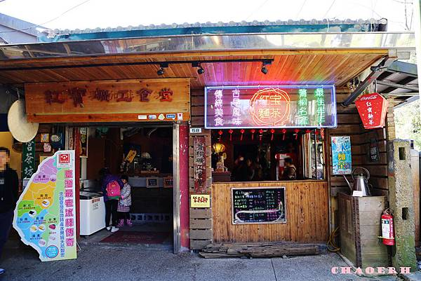
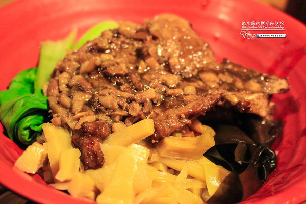

紅寶礦工食堂
google評價：4.1★
店家資訊
地址：新北市平溪區菁桐街58號
營業時間：早上11:00到晚上5:00，星期二休息
店家電話：:02-2495-2168

推薦菜單
懷舊便當100元 鐵道經典便當320元
礦工套餐100元 紅寶涼麵100元 風味點心70元
梅子綠茶60元 熱麵茶30元 熱太白粉35元
顧客評論
紅寶礦工食堂的前身是石底礦坑的礦工福利社，為了刻意呈現民國初年的採礦風貌，所以整間餐廳的氛圍含有非常濃厚的當地特色風格，餐點部分招牌是礦工排骨飯，搭配的都是古早味的配菜，像是筍乾、海帶、菜脯等等，再加上重口味的滷汁就是礦工便當的代表，雖然菜色平凡也不是大魚大肉，但卻足以讓以前在礦坑裡辛苦工作的人飽足一餐，體驗一下也是很有意義的。